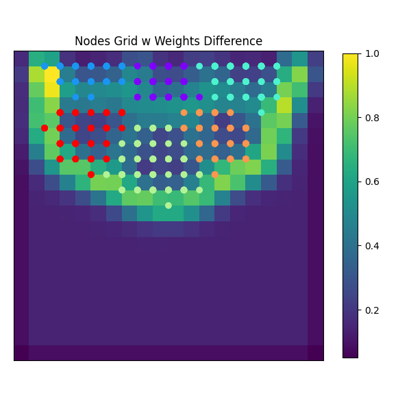
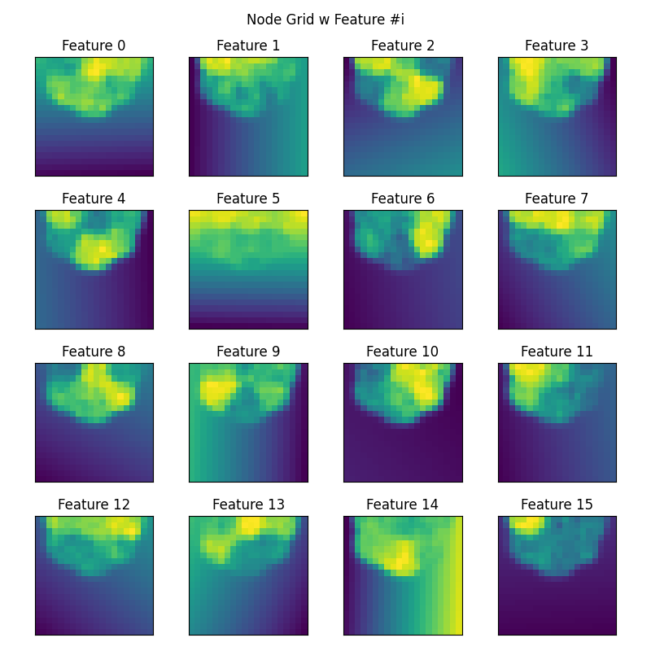

Note
Click here to download the full example code
SOM Dimensionality Reduction (II)¶
This code is equivalent to SOM Dimensionality Reduction
but uses the library minisom. Note that the visualisation produced is not as
nice as SimpSOM. Yet this can achieve through matplotlib or seaborn.
See https://github.com/JustGlowing/minisom/blob/master/examples
Warning
minisom is computationally more efficient than SimpSOM
- 
- 
Out:
The dataset has 16 dimensions and 6 clusters.
quantization error: 0.3353569776230341
14 15 16 17 18 19 20 21 22 23 24 25 26 27 28 29 30 31 32 33 34 35 36 37 38 39 40 41 42 43 44 45 46 47 48 49 50 51 52 53 54 55 56 57 58 59 60 61 62 63 64 65 66 67 68 69 70 71 72 73 74 75 76 77 78 79 80 81 82 83 84 85 86 87 88 89 90 91 92 93 94 95 96 97 98 99 100 101 102 103 104 | # Generic libraries
import pandas as pd
import numpy as np
import matplotlib.pyplot as plt
# Other
from matplotlib import rcParams
from minisom import MiniSom
from sklearn.datasets import make_blobs
from sklearn import preprocessing
# Configuration
rcParams.update({'figure.autolayout': True})
# ----------------------
# Create dataset
# ----------------------
SEED = 0
N_CLUSTERS = 6
N_SAMPLES = N_CLUSTERS * 100
N_FEATURES = 16
# Show information
print("The dataset has {dim} dimensions and {clusters} clusters."
.format(dim=N_FEATURES, clusters=N_CLUSTERS))
# Create dataset
x, y = make_blobs(n_samples=N_SAMPLES,
n_features=N_FEATURES,
centers=N_CLUSTERS,
cluster_std=3,
random_state=SEED)
# Scale data
scaler = preprocessing.MinMaxScaler()
x = scaler.fit_transform(x)
# ----------------------
# Train SOM
# ----------------------
# Create SOM
som = MiniSom(20, 20, x.shape[1],
neighborhood_function='gaussian',
sigma=1.5, learning_rate=.5,
random_seed=SEED)
# Train
som.pca_weights_init(x)
som.train_random(x, 1000, verbose=True)
# Compute projections
prj = np.array([som.winner(e) for e in x])
# Get weights
W = som.get_weights()
# -------------
# Plot overall
# -------------
# Create figure
f, ax = plt.subplots(1, 1, figsize=(6, 6))
# Plot
cs = plt.pcolor(som.distance_map().T)
plt.scatter(prj[:, 0], prj[:, 1], c=y, cmap='rainbow')
ax.set(title='Nodes Grid w Weights Difference',
xticks=[], yticks=[], aspect='equal')
# Add colorbar
cbar = f.colorbar(cs, shrink=0.78)
# -------------------
# Plot feature planes
# -------------------
# Create figure
f, axes = plt.subplots(4, 4, figsize=(8,8))
axes = axes.flatten()
# Plot feature planes
for i, f in enumerate(range(N_FEATURES)):
axes[i].pcolor(W[:, :, f].T)
axes[i].set(title='Feature %s' % f, aspect='equal',
yticks=[], xticks=[])
# Set axes
plt.suptitle("Node Grid w Feature #i")
plt.tight_layout()
# Show
plt.show()
|
Total running time of the script: ( 0 minutes 0.584 seconds)